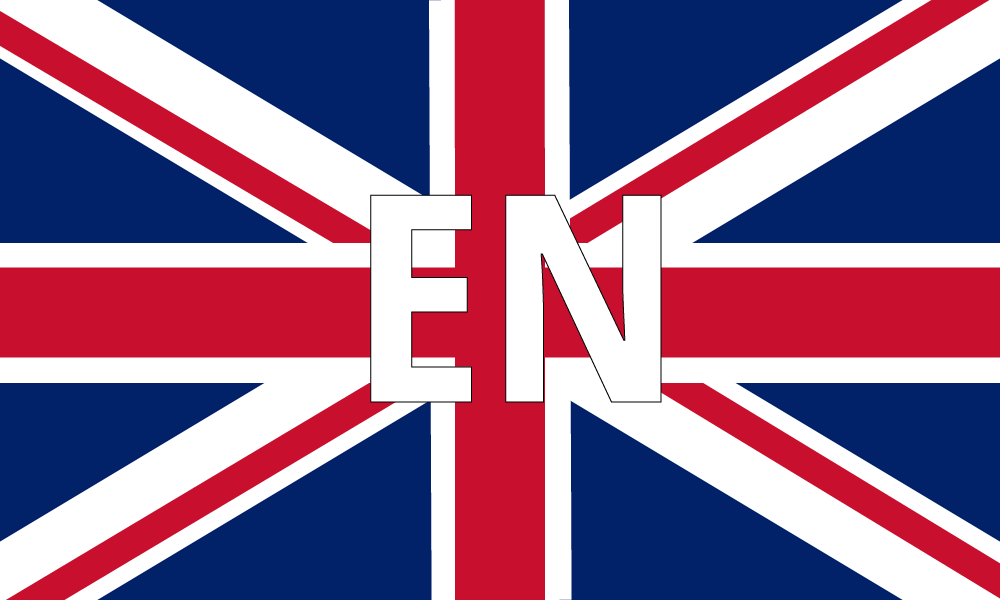

<ion-header [translucent]="true">
  <ion-toolbar>
    <ion-item id="toolbar-container">
      <ion-title>
        Animales
      </ion-title>
      <ion-button color="tertiary" href="/home">SALIR</ion-button>
    </ion-item>
  </ion-toolbar>
</ion-header>

<ion-content class="background-image" [fullscreen]="true">
  <ion-item id="button-container">
    <ion-button class="language-button">
      
    </ion-button>
    <ion-button class="language-button">
      
    </ion-button>
    <ion-button class="language-button">
      
    </ion-button>
  </ion-item>
  
  <div id="temas-container">
    <div id="temas-orientation">
      <ion-button class="temas-opt" color="tertiary">
        
      </ion-button>
      <ion-button class="temas-opt" color="tertiary">
        
      </ion-button>
      <ion-button class="temas-opt" color="tertiary">
        
      </ion-button>
      
    </div>
  </div>
</ion-content>
